扉页
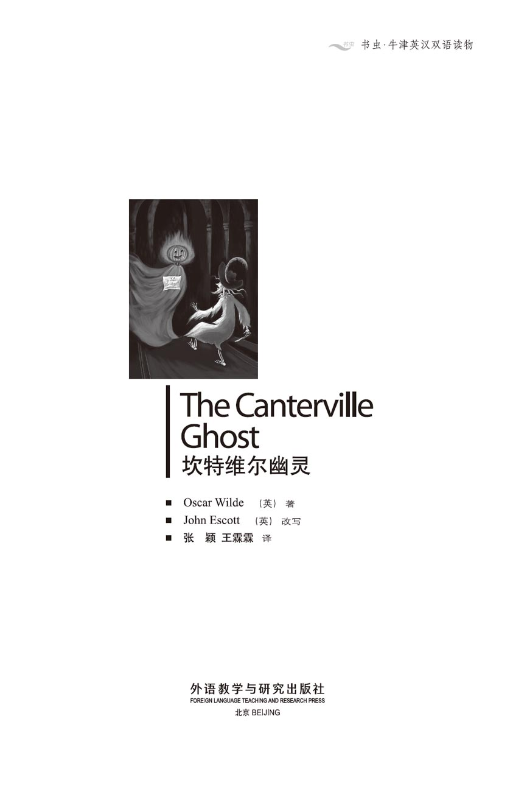
版权页
京权图字01-2006-3282
Originally published by Oxford University Press, Great Clarendon Street, Oxford. © 2002
This edition is licensed for sale in the People's Republic of China only and not for export therefrom.
'Oxford' is a registered trademark of Oxford University Press.
图书在版编目（CIP）数据
坎特维尔幽灵：英汉对照／（英）王尔德（Wilde, O.）著；（英）埃斯科特（Escott, J.）改写；张颖，王霖霖译．—北京：外语教学与研究出版社，2006.6（2014.12 重印）
（书虫·牛津英汉双语读物）
书名原文：The Canterville Ghost
ISBN 978-7-5600-5453-7
Ⅰ．坎… Ⅱ．①王…②埃…③张…④王… Ⅲ．①英语—汉语—对照读物 ②短篇小说—英国—现代 Ⅳ．H319.4：I
中国版本图书馆CIP数据核字（2006）第023530号
出版人： 蔡剑峰
责任编辑：余 军
封面设计：孙莉明
出版发行：外语教学与研究出版社
社 址：北京市西三环北路19号（100089）
网 址：http://www.fltrp.com
版 次：2006年6月第1版
书 号：ISBN 978-7-5600-5453-7
* * *
凡侵权、盗版书籍线索，请联系我社法律事务部
举报电话：（010）88817519 电子邮箱：banquan@fltrp.com
法律顾问：立方律师事务所 刘旭东律师
中咨律师事务所 殷 斌律师
内容简介
内容简介
大多数古老的宅子里都会有些幽灵。有时会是个安静、善良的幽灵；有时候则是个闹哄哄的家伙，总是不停地摔门，咯啷咯啷地晃着锁链。
坎特维尔古堡的幽灵就属于闹哄哄的那种，吵得一家大小全都睡不好觉。于是坎特维尔勋爵把房子卖给了奥蒂斯先生。这位可是美国人，一点儿也不怕什么幽灵。实际上，奥蒂斯夫妇和他们的孩子们——华盛顿、漂亮的弗吉尼娅、加上那对淘气的双胞胎兄弟——非常乐意住在一所有幽灵的宅子里。
但是幽灵可不乐意。他的职责就是吓唬人，而奥蒂斯一家对他那些拿手的把戏一点儿也不害怕。他们的头发没有被吓白，他们没有被吓得逃跑，他们也没有被吓晕——甚至连叫也不叫一声。还有，奥蒂斯家的那对双胞胎知道的把戏，竟比可怜的幽灵还多……
THE CANTERVILLE GHOST
THE CANTERVILLE GHOST
Most grand old houses have a family ghost of some kind. Sometimes it is a quiet and kindly ghost, and sometimes it is a noisy one, always banging doors and crashing about in chains.
The ghost at Canterville Chase is one of the noisy kind, and the family can't get any sleep at night. So Lord Canterville sells the house to Mr Hiram B. Otis, who is an American and not at all worried about ghosts. In fact, Mr and Mrs Otis and their children Washington, pretty Virginia, and the twins, two noisy little boys are very happy to live in a house with a ghost.
But the ghost is not happy. His job is to frighten people, and the Otis family aren't frightened by any of his best tricks. Their hair doesn't turn white, they don't run away in terror, they don't faint — they don't even scream! And the Otis twins know more tricks than the poor ghost will ever know...
目录
1．The Otis family comes to Canterville
1
THE OTIS FAMILY COMES TO CANTERVILLE
When Hiram B. Otis, the American businessman, bought the house called Canterville Chase, people told him that he was doing a very dangerous thing. Everybody knew that there was a ghost in the house. Lord Canterville himself told Mr Otis all about it.
'We don't like to live in the house ourselves,' he said. 'Too many of my family have seen the ghost. My wife's grandmother, the Duchess of Bolton, is one of them. One night, while she was dressing for dinner, two skeleton hands were put on her shoulders. She has been ill for years because of that. And my wife never got any sleep there, because of all the noises at night.'
'Lord Canterville,' answered Mr Otis, 'I will buy both the house and the ghost. I come from a modern country, and we can buy nearly everything in America — but not ghosts. So, if there really is a ghost in the house, we can send it home to America, and people will pay to go and see it.'
'I'm afraid that the house really does have a ghost,' said Lord Canterville, smiling. 'Perhaps there are no ghosts in your country, but our ghost has been in the house for three hundred years, and it always appears before the death of one of the family.'
'Well, so does the family doctor, Lord Canterville. But there are no ghosts, sir, in any country — not even in famous old British families.'
'Very well,' said Lord Canterville. 'If you're happy to have a ghost in the house, that's all right. But please remember that I did tell you about it.'
* * *
And so Mr Hiram B. Otis bought the house, and a few weeks later he and his family went down to Canterville Chase on the train.
Mrs Otis was a very beautiful woman, and looked just as English as an Englishwoman. American people are really no different from English people — but they do, of course, speak a different language. Her eldest son, Washington, was a good-looking young man with a wonderful smile, who was famous at all the London parties for his fine dancing. Miss Virginia E. Otis was a sweet little girl of fifteen with big blue eyes. She loved to ride horses and could ride-faster than a lot of men. One day the young Duke of Cheshire saw her on horseback, and immediately asked her to marry him — but his family sent him back to school the next day. After Virginia came the twins — two happy, noisy little boys, who were always laughing and playing tricks.
It was a lovely July evening when the family got off the train. The fields and trees looked beautiful in the golden sunshine. The birds were singing sweetly, and the sky was a bright blue. But when they arrived at Canterville Chase, storm clouds suddenly appeared in the sky. Then ten or twelve large black birds flew down over their heads, and big drops of rain began to fall.
An old woman in a black dress was standing in the doorway of the house, waiting to meet them. This was Mrs Umney, the housekeeper.
'Welcome to Canterville Chase,' she said.
They followed her into the library — a long, dark room with a high window at one end. Here, tea was ready for them, so they took off their coats and sat down.
Suddenly Mrs Otis saw a dark red stain on the floor, near the fireplace.
'Is that a stain on the floor there?' she asked.
'Yes, Mrs Otis,' said Mrs Umney quietly. 'It's a bloodstain.'
'Oh, that's terrible!' cried Mrs Otis. 'I can't have bloodstains on my floors. It must go.'
The old woman smiled, and again answered in a quiet voice. 'It is the blood of Lady Eleanore de Canterville,' she said. 'Her husband, Sir Simon de Canterville, murdered her in 1575, while she was standing just there, in that place. He lived for another nine years after her death, but then he disappeared, very strangely and suddenly. Nobody ever found his body, but his ghost is still in the house, and will not rest. The bloodstain is famous — visitors come here specially to see it. People have tried to clean it, but it will not go away.'
'Of course it will!' cried Washington Otis. 'Pinkerton's Famous Stain Cleaner will clean it up in a second.'
And before the housekeeper could stop him, he was cleaning the floor with a small black stick.
A minute later, the bloodstain was gone!
'There you are!' he said, smiling at the others. 'Pinkerton can clean anything!'
But at these words the storm outside suddenly began. A terrible flash of lightning lit up the room, and a second later came a great crash of thunder. Everyone jumped up at the sound of the thunder...and Mrs Umney fainted.
'What terrible weather this country has!' said Mr Otis. He sat down again and lit a cigarette.
Mrs Umney lay on the floor, with her eyes closed. Mrs Otis looked at her. 'My dear Hiram,' she cried. 'What can we do with a woman who faints?'
'Tell her she has to pay some money,' said Mr Otis. 'If she breaks a cup or something, she has to pay for it. So tell her to pay if she faints. She won't faint after that.'
At this Mrs Umney immediately sat up, but she looked very unhappy. 'Be careful! Trouble is coming to this house!' she said, her voice shaking. 'I have seen things here which are too terrible to describe. For night after night, I have not closed my eyes in sleep.'
Mr Otis gave her a warm smile. 'My wife and I are not afraid of ghosts, Mrs Umney.'
The old housekeeper got shakily to her feet. 'You Americans are so strong!' she said. 'And so kind! You know, I have worked here for many, many years at the same pay, and...'
'OK, Mrs Umney. We'll pay you more money,' said Mr Otis, still smiling.
'Oh, thank you, dear Mr Otis. And dear Mrs Otis. Thank you very much.'
lord n. a man of noble rank, esp. in Britain （尤指英国的）贵族（此处指勋爵）
duchess n. the wife of a duke 公爵夫人
skeleton n. the structure consisting of all the bones in a human or animal body 骨骼；骸骨
shoulder n. the part of the body at which the arm is attached 肩膀
appear v. to become able to be seen 出现
remember v. keep in the memory; not forget 牢记；记住
wonderful adj. unusually good 极好的
duke n. a nobleman of the highest rank outside the royal family 公爵
immediately adv. without delay; at once 马上；立即
trick n. a troublesome but playful act 恶作剧
fireplace n. the opening for a coal, fire in the wall of a room 壁炉
stain n. a mark left accidentally on surfaces 污迹
murder v. kill (a human being) unlawfully, esp. wickedly or inhumanly 谋杀；凶杀
disappear v. to go out of sight 消失；不见
specially adv. for a particular purpose 专门地；特地
crash n. a sudden loud noise made 突然发出的巨响
faint v. lose consciousness unexpectdly 昏厥；晕倒
shake v. to move up and down or from side to side with quick short movements 发抖；颤抖
describe v. to say what something is like; to give a picture of in words 形容；描述
奥蒂斯一家来古堡
1．奥蒂斯一家来古堡
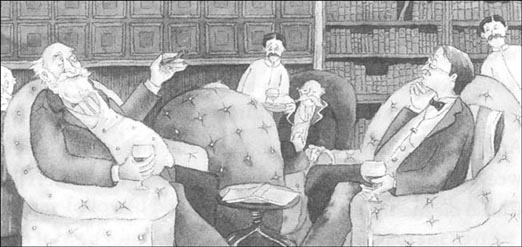
当美国商人海勒姆·B. 奥蒂斯买下那座叫坎特维尔古堡的宅邸时，人们对他说，他正在做一件非常危险的事情。每个人都知道，那座宅子里有一个幽灵。坎特维尔勋爵还亲自对奥蒂斯先生讲了有关它的一切。
“我们自己都不愿意在那房子住，”他说，“我家里有很多人都见过这个幽灵。我妻子的祖母，博尔顿公爵夫人，就是其中一位。有天晚上，当她正在穿衣服准备去赴宴，有两只骷髅手放在了她的肩膀上。她因此一病不起，有好多年了。我妻子从没在那儿睡着过觉，因为晚上总有各种稀奇古怪的声音。”
“坎特维尔勋爵，”奥蒂斯先生答道，“我要把房子，还有幽灵都买下来。我来自现代化的国家，在美国我们几乎能买到一切——可买不到幽灵。所以，如果宅子里真有幽灵，我们就把它送回美国去，人们会花钱来参观的。”
“恐怕房子里真有幽灵，”坎特维尔勋爵笑道，“或许在你们的国家没有幽灵，但我们家的幽灵住在房子里有300年了，而且，在家里有人去世之前，它总会现身。”
“是啊，家庭医生那会儿也会现身的，坎特维尔勋爵。但幽灵是不存在的，先生，不管是哪个国家——哪怕在鼎鼎大名的传统英国家庭。”
“那好吧，”坎特维尔勋爵说，“如果你乐意家里有个幽灵的话，那没问题。但请记住我是警告过你的。”
* * *
于是，海勒姆·B. 奥蒂斯先生买下了那栋宅子，几周之后，他们一家人便乘火车来到了坎特维尔古堡。
奥蒂斯太太是位非常漂亮的女人，看上去就跟英国女人一样。其实美国人和英国人没什么两样——但他们讲的话确实不同。奥蒂斯太太的大儿子叫华盛顿，是个英俊的年轻人，笑起来非常好看，他的优美舞姿在伦敦各大舞会上都颇有名气。弗吉尼娅·E. 奥蒂斯小姐是位可爱的小姑娘，15岁了，有一双蓝色的大眼睛。她喜欢骑马，而且比许多男人骑得还要快。一天，年轻的柴郡公爵看见她骑马的样子，便立即向她求婚——可惜第二天公爵的家人就把他送回了学校。在弗吉尼娅之后还有一对双胞胎——两个快活、吵闹的小男孩。他们总是笑个不停，爱搞恶作剧。
7月一个醉人的傍晚，这一家人下了火车。在金色的夕阳下，田野和树木看上去美极了，鸟儿欢快地唱着歌，天空一片蔚蓝。可就在他们到达坎特维尔古堡的时候，天空中出现了乌云，十来只巨大的黑鸟盘旋在他们的头顶上，接着豆大的雨点便开始落下来。
一位穿黑裙子的老妇人正站在门口等候他们，她是乌玛尼夫人，宅子的管家。
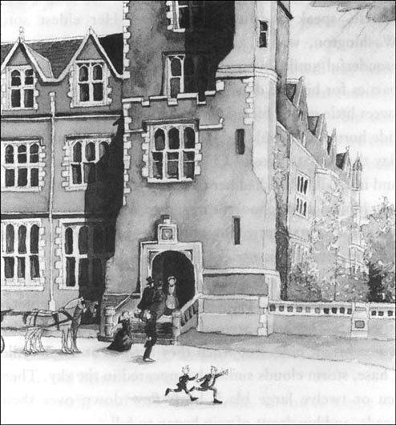
“欢迎来坎特维尔古堡。”她说。
一家人跟着她来到书房——一间又长又暗的屋子，屋子的一头是高高的窗户。茶水已经为他们准备好了，于是他们脱下外衣，坐了下来。
突然，奥蒂斯太太看到地板上有一块暗红色的污迹，就在壁炉旁边。
“地板那儿是有块污迹吧？”她问。
“是的，奥蒂斯太太，”乌玛尼夫人平静地说，“那是血迹。”
“啊，太恶心啦！”奥蒂斯太太叫道，“我家的地板上可不能有血迹，一定要弄干净。”
那老妇人微笑着，依然用平静的声音回答，“那是埃莉诺·德·坎特维尔夫人的血迹，”她说，“她的丈夫，西蒙·德·坎特维尔爵士，于1575年将她谋害，当时她就站在那儿，就那个地方。她死之后，西蒙老爷又活了9年，可那以后他就突然失踪了，很是离奇。没有人找到过他的尸首，但他的鬼魂一直徘徊在宅子里，永不安宁。这块血迹非常有名——观光者都特地来参观。人们试过要把它擦干净，可就是去不掉。”
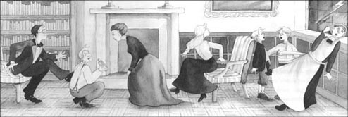
“肯定去得掉！”华盛顿·奥蒂斯大声说道，“平克顿牌的著名去污剂一下子就能把它去掉。”
管家还没来得及阻止他，他就已经在用一根黑色的小棒棒清洁地板了。
一分钟之后，血迹不见了！
“看吧！”他对其他人笑着说，“用平克顿什么都能去掉！”
话一出口，外面忽然下起了暴风雨，可怕的闪电照亮了整个房间。片刻之后，传来一声巨雷，吓得大家跳了起来……而乌玛尼夫人晕了过去。
“这个国家的天气糟糕透了！”奥蒂斯先生说道。他重新坐好，点了一支烟。
乌玛尼夫人倒在地上，双目紧闭。奥蒂斯太太看着她。“亲爱的海勒姆，”她喊道，“有女士昏过去了，我们该怎么办？”
“跟她说她得赔钱。”奥蒂斯先生说，“要是她打碎了杯子啥的，她就得赔。所以告诉她要是晕倒了就得赔钱，那样她就晕不了啦。”
听到这儿乌玛尼夫人立马就坐了起来，可她看上去不大高兴。“小心吧！这房子里的麻烦开始啦！”她说，声音颤抖不已。“我见过这儿发生的事情，可怕得都难以形容。我一宿一宿地睡觉都不敢合眼。”
奥蒂斯先生热情地对她笑笑。“我太太和我都不怕鬼，乌玛尼夫人。”
老管家颤颤巍巍地站了起来。“你们美国人可真是天不怕地不怕啊！”她说，“人也真好！知道吧，我在这儿干了好多好多年啦，薪水都没涨，还有……”
“好啦，乌玛尼夫人。我们会付你更多的钱的。”奥蒂斯先生仍然笑着说。
“啊，谢谢您，亲爱的奥蒂斯先生，还有亲爱的奥蒂斯太太。非常感谢你们。”
2．Sir Simon meets the Otis family
2
SIR SIMON MEETS THE OTIS FAMILY
The storm went on all night, and the next morning, when the family came down to breakfast, the bloodstain was on the library floor again.
'That's strange,' said Washington. 'Pinkerton's Famous Stain Cleaner usually cleans anything. It must be the ghost.'
He cleaned the floor again with the little black stick, but the next morning the stain appeared once more. That night, Mr Otis closed the windows and locked the library door. But in the morning the bloodstain was there again.
The family found this most interesting.
'Is there a ghost, or isn't there?' they said to themselves. They could not decide.
But that night, they had the answer to their question.
After the family was in bed and asleep, a strange noise woke Mr Otis. It sounded like something metal moving slowly along the passage, and it was coming nearer to his bedroom door. He got out of bed and listened carefully. The strange noise went on, and he also heard the sound of footsteps. Then he put on his shoes, took a small bottle from his cupboard, and opened the door of his room.
There, in the moonlight, was an old man with eyes as red as fire. His grey hair was long and dirty, his clothes were old and full of holes, and there were heavy metal chains round his arms and legs.
'My dear man,' said Mr Otis, 'you really must put some oil on those noisy chains! I've brought you a bottle of Tammany's Sun Oil, which is very good. Everybody in America uses it. I'll leave it here for you, and I'll be happy to give you some more when you need it.'
He put the bottle down on a small table, then went back inside his room and got into bed.
For a second or two the Canterville ghost stood still. He was so angry! Then he knocked the bottle of oil on to the floor and hurried away. A strange green light came from his body, and he gave a long and terrible cry that rang through the house. But when he got to the top of the stairs, a door opened, two little people appeared, and a large pillow went flying past his head!
This was too much for the ghost, so he quickly disappeared through the wall, and soon the house was quiet again.
When he got to his secret room, the Canterville ghost sat down in the moonlight and tried to think. He was both angry and unhappy.
'For three hundred years,' he said to himself, 'I have been the best and the most famous ghost in the country! Everybody — everybody — has been afraid of me. There was the Duchess of Bolton not long ago. I put my skeleton hands on her shoulders, and she nearly died of terror. She has been ill ever since. Before that, there were three — no, four — housekeepers, who ran away from the house, screaming. Then there was that wonderful night in 1752 when Lord Augustus shot himself in the library, because he saw a skeleton in the armchair by the fire. And there was the beautiful Lady Stutfield, who never spoke again after my cold fingers held her long white neck while she sat at dinner.'
The ghost sat there, remembering all those happy times in the past. But he was not happy now. 'After all this,' he said, 'these terrible modern Americans come to the house and give me Tammany's Sun Oil for my chains, and throw pillows at my head! It's too bad! They'll be sorry for this — oh, yes, they will!'
All night long, the ghost sat, and thought hard.
interesting adj. causing curiosity; holding the attention 有趣的；引起兴趣的
metal n. any usu. solid shiny mineral substance which can be shaped by pressure and used for passing an electric current 金属
passage n. a narrow way for passing along, esp. with walls on either side; a corridor 走廊；通道
cupboard n. a recess or piece of furniture with a door and (usu.) shelves, in which things are stored （放衣服、食品等的）小橱
pillow n. a cloth bag, usu. longer than it is wide, filled with a soft substance and used for supporting the head in bed 枕头
secret adj. (of a place) hidden, completely secluded 隐蔽的；暗藏的
terror n. extreme fear 恐怖；惊骇
scream v. a sudden loud cry expressing anger, pain, fear, etc. （因恐惧、痛苦等而）尖声喊叫
西蒙爵士现身
2．西蒙爵士现身
暴见雨下了一整夜。第二天早上，当一家人下楼吃早饭时，血迹又出现在书房的地板上了。
“真奇怪，”华盛顿说，“通常平克顿去污剂什么都能除掉。一定是幽灵在捣鬼。”
他又用黑色小棒清洁了地板，可第二天早晨血迹又出现了。当天晚上，奥蒂斯先生关好窗户，锁紧了书房的门，可到了早上血迹又在那里了。
一家人觉得这真是挺有趣的。
“到底有没有幽灵啊？”他们暗自琢磨，可下不了定论。
但是当天晚上，他们就得到了答案。
在一家人都上床睡着之后，一个奇怪的声音惊醒了奥蒂斯先生。好像有金属的东西慢慢在走廊里拖动，离他的卧室门口越来越近。他起身下床，细听动静，奇怪的声音还在继续，他还听到有脚步声。于是他穿上鞋，从橱柜里拿出个小瓶子，打开了卧室的门。
就在月光下，有个老家伙，他的眼睛火红火红的，灰色的头发又长又脏，衣服破旧不堪，满是窟窿；他的腿和胳膊上都拴着沉重的铁链。
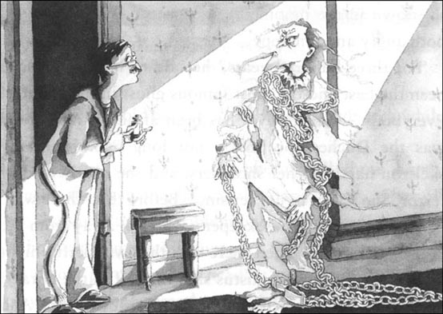
“亲爱的先生，”奥蒂斯先生说，“你真该给这些叮叮当当的链子擦点儿油了！我给你拿了一瓶坦马尼太阳油，效果好着呢，美国人都用它。我把它留给你，如果你还有需要，我非常乐意再为你提供。”
他把瓶子放在一张小桌上，接着就回卧室上床睡觉了。
有那么一两秒钟，这位坎特维尔的幽灵僵在那里，气得七窍生烟！然后他一下子把油瓶碰倒在地板上，急匆匆地走了。他身体上发出奇怪的绿色光芒，接着他发出一声长长的、可怕的怪叫，响彻了整个宅邸。但就在他上到楼梯顶上的时候，有扇门打开了，出现了两个小人影，一个硕大的枕头从他头上“呼”地飞了过去！
这样对待幽灵太过分啦，因此他迅速穿过墙壁，消失了。片刻之间，整个宅子又安静下来。
幽灵回到自己的秘室，坐在月光下试图集中思想。他既忿忿不平，又满腹委屈。
“300年来，”他暗自思忖，“我都是全国最出色、最有名望的幽灵！每个人——每个人哪——都对我惧怕不已。不久之前就有博尔顿公爵夫人中了招儿，我把骷髅手放在她的肩膀上，几乎把她吓死，从那以后她就一病不起。在她之前，有三个——不，是四个——管家婆，都是一边尖叫一边跑出这座宅子的。还有在1752年，那个美好的夜晚，奥古斯塔斯勋爵在书房里开枪自杀，因为他在火炉旁的扶手椅上看到了一副骷髅架子。再有就是那位楚楚动人的斯图菲尔德小姐，在她用晚餐的时候，我用冰凉的手指握住了她那颀长雪白的脖子，从那以后她就再没有说过话。”
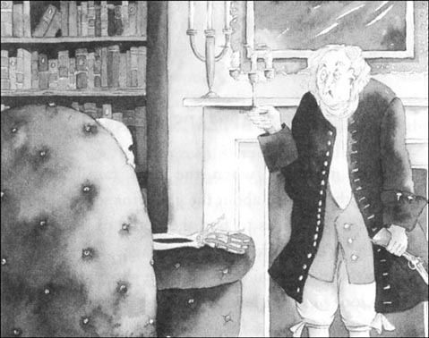
幽灵坐在那里，回忆着过去所有的美妙时光。可他现在一点儿也不觉得美妙。“在所有这些之后，”他说道，“这些可恶的、新潮的美国佬搬进这栋宅子，还给我坦马尼太阳油来擦链子，扔大枕头砸我的脑袋！真是太可恶啦！他们会为此后悔的——哼，对，会后悔的！”
幽灵就坐在那儿，冥思苦想了整整一夜。
3．A second ghost appears at Canterville
3
A SECOND GHOST APPEARS AT CANTERVILLE
The next morning, when the Otis family met at breakfast, they talked about the ghost for some time. Mr Otis was a little cross to find the bottle of Tammany's Sun Oil lying on the floor of the passage.
'I don't want,' he said, 'to hurt the ghost in any way.' Here he looked at the boys. 'We must remember that he has lived in this house for a very long time, so I don't think it's very nice to throw pillows at him — no, don't laugh, boys, it's not funny. But if the ghost won't use the oil, we will have to take his chains away from him. We can't possibly sleep with that noise going on outside our bedrooms every night.'
But for the rest of the week all was quiet. The only interesting thing was the bloodstain. Every day Washington cleaned the floor with Pinkerton's Stain Cleaner, and every night Mr Otis carefully locked the windows and the library door. But the bloodstain was always there again the next morning.
It also changed colour a few times. On some days it was red, on other days it was purple, and once it was bright green. Most of the family thought these colour changes were very funny and they hurried downstairs each morning to find out the new colour. The only person who did not laugh was little Virginia, but she would not explain why. And on the morning the bloodstain was bright green, she nearly cried.
On Sunday night, soon after the family went to bed, the ghost made his next move. There was a three-hundred-year-old suit of armour downstairs. 'Now, a ghost in armour will surely frighten even modern Americans,' he thought. He began to put on the suit of armour, but it was too heavy for him, and he and the armour fell to the floor with a loud CRASH.
All the men in the Otis family jumped out of bed and hurried downstairs at once. They found the unhappy ghost sitting there, holding his head and crying softly with pain. The twins had their pea-shooters with them and immediately began to shoot little balls of paper at him. Mr Otis brought out his handgun and, like the good Californian he was, called out to the ghost:
'Hold up your hands!'
At this, the ghost jumped up with a wild and angry scream and flew through them. Washington Otis's candle went out, and suddenly everything was dark. At the top of the stairs, the ghost turned to give his terrible ghostly laugh — the famous laugh which once turned Lord Raker's hair white in a single night. It went on and on until the house was full of the sound.
A bedroom door opened and Mrs Otis appeared with a bottle in her hand. 'I'm afraid you're not feeling very well,' she said to the ghost. 'I've brought you some of Dr Dobell's special stomach medicine. If you're having trouble with your stomach, this will soon help you to feel better.'
The ghost looked at her angrily, and began to turn himself into a big black dog (one of his most famous tricks). But the sound of young footsteps coming up the stairs stopped him, and he quickly disappeared with a ghostly 'Oooooooh!' before the twins arrived at the top.
For some days after this he was very ill, and only went out to make the bloodstain again each night. But when he began to feel better, he decided to try for the third time to frighten Hiram B. Otis and his family.
He spent most of Friday, the 17th of August, trying to decide what to wear. At last he decided on a dead man's shroud, a large black hat with a red feather in it, and a long knife.
That night the wind shook all the doors and windows, and the rain crashed down onto the roof of the house. The ghost made his plans carefully.
'I'll go first to Washington Otis's room,' he said to himself. 'He cleans away the famous Canterville bloodstain each morning, so I want to be sure that he'll be really frightened. I'll make ghostly noises to wake him up, then I'll push my knife into my neck three times, to the sound of slow music.'
'Then I'll go to Mr Hiram B. Otis's room. I'll make a terrible noise in his ear, and at the same time put my cold hand on Mrs Otis's face. Now, what about Virginia? She's never played any tricks on me, and she's sweet and pretty. Perhaps I'll just make a soft 'Ooooh!' in her ear ... or move her bed sheets a little with my skeleton's fingers.'
'And then on to the twins! Those horrible boys are going to learn a lesson tonight! I'll stand between their beds, looking like a dead body — cold and green and smelling of death. They'll be too frightened to move. Then I'll throw off my shroud and do my famous skeleton dance all round the room.'
He heard the family go to bed at half past ten. For some time he listened to the laughs and shouts of the twins, but by a quarter past eleven all was quiet.
At the sound of midnight, the ghost left his room. He came out of the wall with the knife in his hand and a smile on his face. It was not a nice smile, and when the moon saw it through a window, she hid behind a cloud.
Slowly and silently the ghost moved through the house, while the Otis family went on happily sleeping. At the corner of the passage which went along to Washington's room, the ghost stopped for a minute. A little wind came from nowhere, pulling his long white shroud this way and that, and showing the skeleton arms and neck of the walking dead. He heard the clock sound a quarter past midnight, gave a little laugh, and turned the corner...
...And stopped — in terror! There, in front of him, was standing the most horrible ghost. It had a large head with no hair on it, and a fat round face with a deathly smile across its open mouth. A red light burned like fire inside its mouth and behind both of its eyes. Its great body was hidden under a long shroud, and it carried a large piece of paper with strange writing on it.
The Canterville ghost did not wait to read it. He was too frightened. When you see your first ghost, you don't stop to talk, you turn and run — so the Canterville ghost turned and ran. His long shroud got caught around his feet and he nearly fell over, but he ran as fast as he could, away from the horrible thing that was watching him with fire in its eyes. He turned the corner, dropped his knife into one of Hiram B. Otis's shoes, which were outside his bedroom door (Mr Otis found it there the next morning) , and ran on to his room.
He threw himself onto his bed, and hid his head under his pillow. It was some time before he began to feel better. Then he told himself that he was a Canterville, and that Cantervilles were fighters to the end.
'When it gets light,' he thought, 'I'll go and speak to this other ghost. Perhaps we can be friends. After all, two ghosts are better than one, and if the two of us work together, perhaps we can frighten those terrible twins at last.'
Very early the next morning, while the family was still sleeping, he went back to the passage. The other ghost was still there, but now there was something wrong with it. There was no fire in its eyes, and it was resting against the wall like a sick man. The Canterville ghost moved forward quickly and put his arms round the other ghost and its head fell off! Then the body fell to the floor, and the Canterville ghost saw that he was holding a white bed sheet. And there was a brush, and a turnip with holes in it, lying at his feet.
'What's happened?' he thought. 'Where has the ghost gone?'
Then he saw the piece of paper on the front of the sheet, and there, in the grey morning light, he read these terrible words:
The Otis Ghost
The only true and real ghost,
All others are false.
At once he understood everything. It was a trick — another horrible trick! He stood there, too angry to move, and tried to think of a plan to finish these terrible Americans once and for all. But he couldn't think of any plan, so after a while he went to find a quiet dark place to lie down in.
cross adj. angry; bad tempered 脾气坏的；易怒的
funny adj. causing laughter; amusing 有趣的；滑稽的
change v. make or become different 改变
armour n. a defensive covering, usu. of metal, formerly worn to protect the body in fighting 盔甲
pea-shooter n. a small tube used by children for blowing. small objects at people or things 射豆枪
candle n. a usu. round stick of wax containing a length of string which gives light when it burns 蜡烛
stomach n. a baglike organ in the body where food is broken down for use by the body after being eaten. 胃
shroud n. a cloth for covering a dead body for burial 裹尸布
horrible adj. very unkind or unpleasant 极讨厌的
quarter n. 15 minutes before or after the hour 一刻钟
after all in spite of everything 毕竟；终究
sick adj. ill, affected by illness 有病的；不舒服的
turnip n. a large round yellowish or white root which is used as a vegetable 芜菁
once and for all in a final or conclusive manner, esp. so as to end hesitation or uncertainly 彻底地
又一个幽灵现身古堡
3．又一个幽灵现身古堡
第二天早晨，奥蒂斯一家一起吃早餐时，谈论了一会儿幽灵的事。奥蒂斯先生对于坦马尼太阳油倒在走廊的地板上有些气恼。
“我不希望，”他说，“以任何方式伤害到幽灵。”说到这儿，他看了眼男孩子们。“我们要记得，他在这所宅子里已经住了相当长时间，所以我认为朝他扔枕头可不太好——不，别笑，小伙子们，这不好笑。但是如果幽灵不想擦油，我们就得把铁链从他身上卸下来。每天晚上卧室外面要全是噪音，那我们就别想睡安稳觉啦。”
可是这一周的剩下几天平安无事。唯一有趣的事情是那块血迹。每天华盛顿都用平克顿去污剂清理地板，每天晚上奥蒂斯先生都仔细地锁好窗户和书房门。但第二天早晨血迹总是再度出现。
有几次它还变换了颜色。有些天它是红色的，有些天又是紫色的，还有一次变成鲜绿色。家里多数人都觉得这些颜色变换十分好玩儿，每天早上都迫不及待地跑下楼来，查看新换的颜色。唯一一个不觉得好笑的是小弗吉尼娅，可她却不愿说出为什么。在血迹变成鲜绿色的那个早晨，她差一点儿哭了出来。
星期天晚上，一家人刚刚就寝，幽灵就采取了下一步的行动。在楼下有一副300年历史的盔甲。“好啦，就算是时髦的美国人肯定也会害怕穿甲胄的幽灵吧。”他暗想。他开始穿戴盔甲，可它太重了，只听“哐当”一声，他连人带盔甲都摔到了地上。
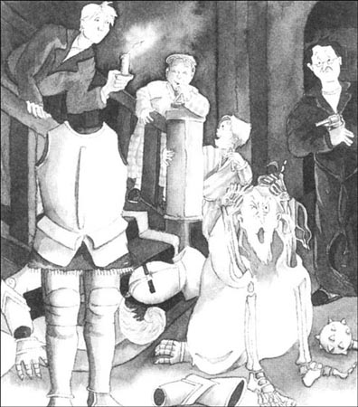
奥蒂斯家的所有男子汉都从床上蹦了起来，马上冲到楼下。他们发现倒霉的幽灵坐在原地，双手抱头，疼得在小声哭泣。双胞胎兄弟带着射豆枪，立即用小纸球向他射击。奥蒂斯先生掏出了手枪，像加利福尼亚的好汉一样对幽灵大喝道：
“把手举起来！”
见此情景，幽灵怒喝一声，跳了起来，从他们当中飞了过去。华盛顿·奥蒂斯手中的蜡烛熄灭了，突然间一片黑暗。在楼梯的顶端，幽灵发出了可怕的笑声——这笑声因为曾经让雷克斯勋爵一夜之间变白了头发而闻名天下。笑声持续不断，直到充斥整栋宅邸。
一间卧室的门打开，奥蒂斯夫人出现了，手中拿着一个瓶子。“我担心你是感觉不舒服了，”她对幽灵说，“我给你拿了点儿多贝尔医生治胃病的特效药。如果你胃有毛病，这个能让你马上感觉好起来。”
幽灵气愤地看着她，摇身变成一条巨大的黑犬（这是他著名的把戏之一）。但是蹦蹦跳跳跑上楼梯的脚步声令他停了下来，“呼——”的一声，他就迅速消失了，那对双胞胎还没来得及跑上楼来呢。
在这之后的很长时间，幽灵都病得十分厉害，每天晚上他仅仅是去把那块血迹变出来。但当他稍稍恢复以后，他决心第三次再去吓唬海勒姆·B. 奥蒂斯一家。
8月17日星期五，差不多一整天他都在考虑应该怎么打扮自己。他最终决定：身穿裹尸布，头戴大黑帽，帽插红羽毛，手持长刀。
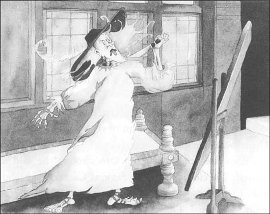
当天晚上，狂风摇曳着所有的门窗，雨滴砸在屋顶之上。幽灵在小心翼翼地计划着：
“我要先去华盛顿·奥蒂斯的房间，”他自言自语道，“他每天都来清洗坎特维尔著名的血迹，所以我要好好地吓他一跳。我先一阵鬼叫把他吵醒，然后合着缓慢的音乐节拍，用刀子戳进我的脖子三次。”
“然后我要去海勒姆·B. 奥蒂斯先生的房间。我要冲着他的耳朵鬼叫，同时把我冰凉的手放在奥蒂斯夫人的脸上。那弗吉尼娅怎么办？她倒从来没对我耍过什么花样，也挺漂亮可爱。要不我只在她耳朵边上轻轻“嗷”一声吧……或者用我的骷髅手指拽一下她的床单。”
“接着就轮到那对双胞胎了！今天晚上，要好好教训一下这两个坏小子！我要站在他们俩的床中间，看上去就像具死尸——冰冷、铁青，发出死亡的臭味。他们会被吓得动也不敢动。然后我就扯掉我的尸袍，在屋子里跳起我那著名的骷髅舞。”
10点半，他听到一家人都上床了。有一段时间他还听到那对双胞胎在又笑又叫，但11点一刻之后，一切都安静下来。
午夜的钟声响了，幽灵离开自己的房间。他穿墙而出，手中拿着刀，脸上带着窃笑。这笑容不怀好意，就连月亮透过窗户看到它时，也躲到了云丛中。
幽灵蹑手蹑脚地穿过宅邸，这时奥蒂斯一家还在酣美地睡着。在通向华盛顿房间的走廊拐角处，幽灵停了一会儿。不知哪儿来了一股微风，吹得他身上长长的白色尸袍摇曳起来，露出了骷髅胳膊和脖子。他听到钟声响过零点一刻后，就干笑一声，转过拐角……
……停在那儿了——太可怕了！就在他面前，矗立着一个最最可怕的幽灵。它的头硕大无比，没长头发，肥胖的圆脸上咧着张嘴，露出死一般的微笑。嘴和双眼燃烧着火一般的红光。庞大的身躯隐藏在长长的裹尸布下，还带着一大张纸，上面写着奇形怪状的文字。
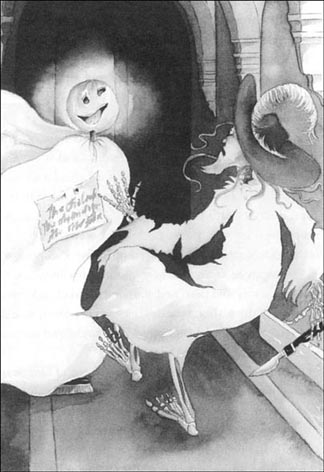
坎特维尔幽灵都没等停下来读一读，他给吓坏了。当你头一遭碰到幽灵时，你不会停下来搭讪吧，你肯定转身便逃——所以坎特维尔幽灵转身就跑。长长的尸袍缠着脚，害得他差点儿摔了一跤，但是他以最快的速度跑着，逃离这个眼中冒火还死盯着他的可怕家伙。他转过墙角，把刀子掉在了海勒姆·B. 奥蒂斯的一只鞋里——他的鞋是放在卧室门外的（奥蒂斯先生第二天早上在鞋里发现了那把刀）——逃回了自己的房间。
他一头扎在床上，把头埋进枕头。过了好一阵子，他才稍稍缓过劲儿来。他告诫自己，他是坎特维尔人，而坎特维尔人都会战斗到底。
“等天亮了，”他思忖着，“我就去找那个幽灵聊聊。或许我们还能做朋友哩。毕竟，二鬼强似一鬼，如果我们两个联合起来，说不定最终能够吓坏那对可恶的双胞胎。”
第二天一大早，当奥蒂斯一家还在熟睡的时候，幽灵就又回到走廊里。那个幽灵仍然在那儿，但现在好像有点儿不大对劲儿。它的眼中没有了火焰，而且还病歪歪地靠在墙上。坎特维尔幽灵赶快跑过去，搂住了那个幽灵——可它的脑袋居然掉了下来。接着身体也倒在地板上，坎特维尔幽灵发现自己拿着的是一张白床单。他的脚下躺着一把刷子和一个上面有洞的芜菁。
“怎么回事？”他想，“那个幽灵去哪儿啦？”
这时他看到床单上的那张纸。在灰色的晨光中，他读到了这些可怕的字：
奥蒂斯幽灵，
唯一真正的幽灵，
余者皆为冒充。
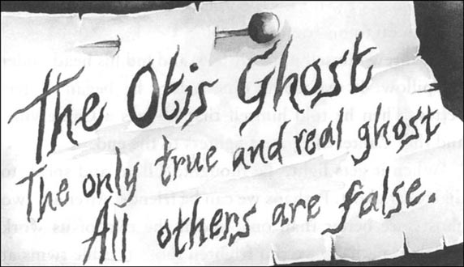
他马上就明白了一切。这是个骗局——又一个可恶的骗局！他站在那儿，气得连动也不能动啦。他绞尽脑汁，要彻底干掉这些美国佬。可是他一个主意也想不出来，所以过了一会儿，他去找了个又黑又静的地方，躺下了。
4．Enemies everywhere
4
ENEMIES EVERYWHERE!
For the next five days the ghost stayed in his room. He was very tired, and he didn't feel well. He decided to stop putting the bloodstain on the library floor.
'The Otis family don't want it,' he thought, 'so they're not going to have it!'
Ghostly appearances were different, of course. It was his job to appear in the passage once a week, and to 'Oooooh!' and 'Aaaaagh!' from the great window on the stairs on the first and third Wednesday in every month.
So for the next three Saturdays, as usual, he walked along the passages between midnight and three o'clock. But he didn't want anybody to see or hear him. He took off his shoes and walked as quietly as he could. He wore a large black coat, and was careful to use Tammany's Sun Oil on his chains. At first he didn't want to, but one evening, while the family was at dinner, he went into Mr Otis's bedroom and took the bottle. After a time, he saw that the oil was really very useful.
But the twins still went on with their tricks. They put things in his way in dark corners, and he fell over them. They put butter on the top stair, and one night his feet went from under him and he went crashing down the stairs to the bottom. This made him very angry, and he decided to visit the boys the next night, as the famous 'Duke with No Head', and frighten them half to death.
He spent three hours getting ready, and was very pleased with how he looked. At a quarter past one he walked through the wall and moved silently through the passages to the twins' bedroom.
The door was open a little way. Pushing it hard, the ghost walked into the room — and a heavy jug of water fell right down on him. At the same time, he heard the twins laughing in their beds.
The ghost — wet from top to bottom — turned and ran from the room. He did not stop until he was back in his room. The next day he was ill with a bad cold.
After this, the ghost stopped trying to frighten the American family. He walked silently round the passages in soft shoes, carrying an old gun, and tried to stay away from everyone.
The last of the tricks happened on the 19th of September. That night the ghost was wearing one of his favourite shrouds, and he decided to walk down to the library. He wanted to see what was left of the bloodstain. He was on his way there when two shapes jumped out of a dark corner of the passage and shouted 'BOO!' in his ear.
The ghost was very frightened, of course, and ran to the stairs. But Washington Otis was waiting for him there, with a big garden-syringe. There were enemies on all sides! 'Aaaagh!' the ghost cried, then turned quickly and disappeared into the fireplace, which, luckily for him, was not lit. When at last he got back to his room, he was terribly dirty, with black all over his favourite shroud, and very unhappy.
After this, nobody saw him again at night. The twins waited to play tricks on him three or four times. They put nutshells all along the passages, which made walking around difficult for everyone in the house, but the ghost did not appear.
'Oh dear, he's too unhappy to come out,' they said.
Mr Otis began work again on his book. Mrs Otis gave a number of big 'American parties' for the English people who lived near them. The boys played in the house and garden, and Virginia went horse-riding with the young Duke of Cheshire. He was staying at Canterville Chase for the last week of his holidays.
Mr Otis wrote a letter to Lord Canterville and said: 'We think that the ghost has gone away.'
And Lord Canterville wrote back: 'I am happy to hear it!'
But Mr Otis was wrong. The ghost was still in the house. It is true that he was ill, but he was not yet ready to stop his ghostly work. The young Duke of Cheshire was staying in the house, and the ghost knew the Duke's family well. He once appeared before the brother of the Duke's grandfather as the Horseman of Death. The poor man's hair turned white in one night, and for the rest of his life he could only say the words, 'Turn out the light, turn out the light.' Now the ghost wanted to do the Horseman of Death for the young Duke too.
He got everything ready, but in the end he never left his room. He was too frightened of the twins to go out, and the young Duke slept happily in his bed, thinking of pretty Virginia.
appearance n. an outward form as perceived 外表；外貌
butter n. fairly solid yellow fat made from milk or cream and spread on bread, used in cooking 黄油
favourite adj. preferred to all others 最受喜爱的
shape n. something that you cannot see well because it is far away or there is not enough light 模糊的人影；幻象
garden-syringe n. a machine for putting liquid onto plants 浇花器
nutshell n. the hard outer covering of a nut 坚果壳
四面受敌
4．四面受敌
接下来的五天幽灵都待在自己的房间里。他疲惫极了，感觉也不好。他决定不再去书房的地板上染血迹。
“奥蒂斯一家不想要它，”他想，“所以他们不会拥有它！”
幽灵的外形是可以变化的，这是肯定的。每周，他都要出现在走廊里一次，每个月的第一和第三个星期三，他还要在楼梯旁的大窗户那儿“啾”、“啊”地鬼叫一番。
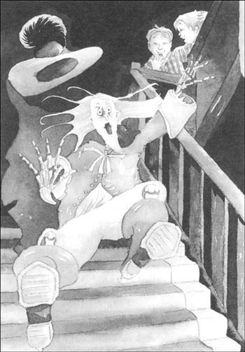
在接下来的三个星斯六，他会跟往常一样，从午夜到凌晨3点，一直在走廊里游走。但他却不想让任何人看到或听到。他脱下鞋子，尽可能轻手轻脚地走着，身穿一件大黑袍，还小心翼翼地在锁链上涂上坦马尼太阳油。最开始他不愿意这么做，但是有天晚上，在一家人吃晚饭时，幽灵跑进奥蒂斯先生的卧室，拿走了瓶子。经过一段时间之后，他发现这润滑油真是非常有用。
可是那对双胞胎仍在不断地搞花样。他们在黑暗的角落里摆上东西挡他的路，结果他被绊倒了。他们还在楼梯顶端抹上黄油，有天晚上幽灵脚一滑，从楼梯顶上一直滚到最底下。这令他恼羞成怒，决心变成著名的“无头公爵”，在第二天晚上去找这兄弟俩，要把他们吓个半死。
他花了三个小时准备，对自己的扮相十分满意。1点1刻，他穿过墙壁，静悄悄地走过走廊，来到那对双胞胎的卧室。
卧室门虚掩着。幽灵用力推开门，走进房间——一大壶水正好浇在他身上，同时，他听到那对双胞胎在床上大笑。
幽灵从头到脚全都湿透了，他转身就跑出了卧室，直到回到自己的房间，才停了下来。第二天，他患上了重感冒。
在这之后，幽灵再不想吓唬这家美国佬了。他穿着柔软的鞋子，悄悄地漫游于走廊上，还拿着一把老枪，试图躲开任何人。
最后一个恶作剧发生在9月19日。那天晚上，幽灵穿着他最喜欢的一件尸袍，决定到书房去，看看那块血迹怎么样了。他正走到半路，突然，在走廊的一个黑暗角落里，有两个人影跳了出来，冲着他大叫一声：“嘘！”
幽灵被吓坏了，连忙向楼梯跑去。可是华盛顿·奥蒂斯正在那儿恭候着，手中拿着浇花用的巨大喷水器。真是四面受敌啊！幽灵大叫一声：“啊！”接着迅速转身，消失在壁炉里——好在壁炉没有点火。当他最终回到自己的屋里时，幽灵邋遢得一塌糊涂，最心爱的裹尸袍全被染黑了，他委屈极了。
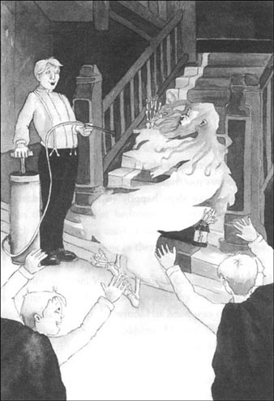
这之后，再也没有人在晚上见过他。有三四次那对双胞胎都在等着捉弄他。他们在走廊里全部撒上果壳，这下倒让屋里的人走起路来都别别扭扭的，可幽灵还是没有出现。
“哎呀，他都不乐意出来了。”双胞胎说。
奥蒂斯先生又重新钻研起书籍来。而奥蒂斯夫人为附近的英国邻居们举行了一系列的“美国社交会”。男孩子们在房子和花园里玩耍，弗吉尼娅和年轻的柴郡公爵一起去骑马。公爵要在坎特维尔古堡度过他假期的最后一个星期。
奥蒂斯先生给坎特维尔勋爵去了一封信说：“我们觉得那个幽灵已经离开了。”
坎特维尔勋爵回信说：“我真高兴听到这消息！”
可是奥蒂斯先生错了。幽灵仍然在宅子里。虽然他确实是生病了，可他不打算停止作怪。年轻的柴郡公爵正待在古堡里，而幽灵非常熟悉公爵一家。曾经有一次，他变成死神骑士出现在公爵的一个叔爷面前。那个可怜人一夜之间便白了头发，而且在余生当中只会说几个字：“熄掉灯，熄掉灯。”现在幽灵打算给公爵也来这么一下。
他一切就绪，但最终还是没离开自己的房间。他太害怕那对双胞胎了，都不敢出门。年轻的公爵在床上美美地睡着，思念着可爱的弗吉尼娅。
5．Poor, poor ghost!
5
POOR, POOR GHOST!
A few days after this, Virginia and the young Duke went out horse-riding. They were riding through some woods when one of the trees caught Virginia's skirt and made a big hole in it. Later, when she got home, she went up the back stairs to her room. She wanted to change her skirt before anyone saw it.
On the way to her bedroom she went past a room which was not often used. The door was half open, and she stopped. 'Is someone in there?' she thought. She went to the door and looked in.
To her surprise, Virginia saw the Canterville ghost. He was sitting near the window, watching the first leaves of autumn dancing in the wind. His head was on his hand, and he looked very unhappy. At first, little Virginia wanted to run away and lock herself in her room, but then she began to feel sorry for him.
She went quietly into the room, but he did not see her until she spoke. 'I am so sorry for you,' she said. 'But my brothers are going back to school tomorrow, and then nobody will hurt you if you don't try to frighten us.'
The ghost was also surprised to see Virginia. 'But I am a ghost,' he answered. 'I must walk about at night, shake my chains, and go "Oooooh!" and "Aaaaagh!" through keyholes. That's my job. It's why I'm here.'
'It's not why at all,' said Virginia. 'And you have been very bad. Mrs Umney told us that you killed your wife.'
'Well, that's true,' said the ghost.
'It is very wrong to kill anyone,' Virginia told him.
'Oh, that's very easy to say!' said the ghost. 'My wife was not beautiful like you. And she was a bad housekeeper, and knew nothing about cooking. Well, it doesn't matter now. It's all finished. But I don't think it was very nice of her brothers to kill me.'
'They killed you?' said Virginia.
'Well, they locked me in a room without food or water until I died,' said the ghost.
'No food? Oh, Mr Ghost, I mean, Sir Simon, are you hungry? I have a sandwich — would you like it?'
'No, thank you,' said the Canterville ghost. 'I never eat anything now. But it's very kind of you. You are much nicer than the rest of your horrible family.'
'Stop!' cried Virginia, angrily. 'It is you who are horrible. You took the paints out of my paint box to make that stupid bloodstain in the library. You took my best reds, so I can't make any more pictures of the sun going down in the evenings. Then you took the green and the yellow. What's left? Dark blue and white! What pictures can I make with those? Only moonlight pictures, which are not easy to do. I never said a word about it to the others, but I was very angry. And it was all very stupid. Green blood! I've never seen green blood.'
'Well, what could I do?' said the ghost. 'It's very difficult to get real blood these days. And your brother started it all with his Pinkerton's Famous Stain Cleaner, so I used your paint. What's wrong with that? You Americans don't understand anything.'
'You know nothing about Americans or America,' said Virginia. 'Why don't you go there? Father will be very happy to pay for your ticket. There are people in America who are ready to pay a hundred thousand dollars to get a family ghost.'
'No, thank you,' said the ghost. 'I don't think I would like America.'
'Why? Because it doesn't have any old buildings that are falling down? Because everything is new and modern? Or because the people don't speak nicely? 'Virginia was angry.' Excuse me, but I must go and ask my father to give the twins another week's holiday!'
'Please don't go, Miss Virginia,' cried the ghost. 'I am so lonely and so unhappy, and I don't know what to do. I want to go to sleep, but I cannot.'
'That's stupid! You just go to bed and put out your candle. It's very easy to sleep. Even babies can do it, and they're not very clever.'
'I have not slept for three hundred years,' he said unhappily, and Virginia's beautiful blue eyes got bigger and bigger with surprise. 'Three hundred years!' he said again. 'And I'm so tired.'
She began to feel sorry for him once more. Her little mouth trembled like the leaves of a flower, and she looked at him kindly. 'Poor, poor ghost,' she said quietly, and moved nearer to him. 'Isn't there anywhere that you can sleep?'
'On the other side of the woods there is a garden,' he answered, with a far-away look in his eyes. 'The grass is long and deep, there are beautiful white flowers, and a bird sings sweetly all night long. The moon looks down, and the big old tree puts out its arms over the sleepers. '
'You — you mean the "Garden of Death",' Virginia said softly.
'Yes, Death. Death could be so beautiful. To lie quietly under the ground, with the grass above moving slowly in the wind, and everything silent ... To have no yesterday, and no tomorrow. To forget time, to have peace, and to be still for ever. ' He looked at her. 'You can open the door to Death for me, for Love is always with you, and Love is stronger than Death is.'
Virginia suddenly felt cold, and she began to tremble.
Then the ghost spoke again, and his voice was like a soft wind through the trees. 'Have you ever read the old words on the library window?' he asked.
'Oh, yes, often,' cried the little girl. 'I know them well. They are painted in strange black letters, and are difficult to read. There are only four lines:
When a golden girl has prayed for you,
And a little child has cried for you,
The house will then be quiet and still,
And peace will come to Cantervitle.
But I don't know what they mean.'
'They mean this,' said the ghost. 'You can pray for me, because I am bad and cannot pray. You can cry for me, and for all the bad things I have done, because I cannot cry. And if you have been sweet and good and kind, Death will be kind to me. Horrible shapes will come to frighten you in the darkness, and you'll hear terrible voices in your ear, but they cannot hurt you. They cannot win the fight against the goodness of a little child.'
Virginia did not answer, and the ghost watched her unhappily. Suddenly she stood up. Her face was very white, and there was a strange light in her eyes. 'I'm not afraid,' she said. 'I'll pray for you to die, and for you to have peace.'
With a small but happy cry, the ghost stood up, took her hand, and kissed it. His fingers were as cold as snow, and his lips burned like fire. Virginia went with him across the dark room. Suddenly the wall opened and there was a great black hole in front of her. A cold wind came out of the darkness, and she could feel something pulling at her dress.
'Come quickly, quickly!' cried the ghost. 'Or it will be too late.'
And in a second the wall closed behind them, and the room was empty.
skirt n. a wornan's outer garment hanging from the waist 裙子
keyhole n. a hole by which a key is put into a lock 锁眼；钥匙孔
kill v. to cause death 杀死
stupid adj. unintelligent, foolish 愚蠢的
lonely adj. unhappy because of being alone or without friends 孤独的；寂寞的
tremble v. shake involuntarily from fear, excitement, weakness, etc. 颤抖；哆嗦
peace n. a freedom from anxiety or troubling thoughts 安心；平静
pray v. to speak, often silently, to God or a god , privately or with others, to show love, give thanks, or ask for (something) 祈祷
empty adj. containing nothing 空的
可怜的幽灵
5．可怜的幽灵
几天之后，弗吉尼娅和年轻的公爵一起去骑马。他们穿过一片树林时，有一棵树挂住了弗吉尼娅的裙子，破了个大洞。后来她回到家，从后面的楼梯来到自己的房间，想在别人瞧见之前把裙子换掉。
在去卧室的路上，她经过一个房间。这个房间不经常用，这时门却半开着，她停了下来。“难道里面有人？”她想。她走到门口向里看去。
令她大吃一惊的是，她看到了坎特维尔幽灵。他正坐在窗边，凝视初秋的落叶在风中飞舞。他双手托着头，看上去很不开心。开始小弗吉尼娅想逃开，把自己反锁在房间里，但后来她为幽灵难过起来。
她悄悄地走进房间，直到她开口说话，幽灵才看到她。“我真为你难过，”她说，“可明天我的兄弟们就要回学校去了，如果你不吓唬我们，就没人会伤害你。”
看到弗吉尼娅，幽灵也挺意外。“可我是个幽灵，”他回答说，“我必须在晚上游来荡去，摇晃着我的铁链，冲着钥匙孔‘啾’、‘啊’乱叫。这就是我干的活儿，所以我才在这儿。”
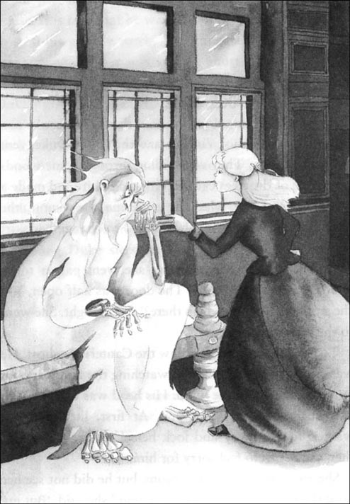
“才不是这个原因呢！”弗吉尼娅说，“你坏透了。乌玛尼夫人说你杀死了自己的妻子。”
“唉，这倒是真的。”幽灵说。
“不管杀谁都是不对的。”弗吉尼娅告诉他。
“嘿，说起来倒容易！”幽灵说，“我老婆可没你那么漂亮，把家管得也不怎么样，对做饭也一窍不通。唉，现在这都不重要了，都结束了。可我觉得她的兄弟们把我杀了，这是不对的。”
“他们杀害了你？”弗吉尼娅问。
“嗯，他们把我锁在房间里，没有水，没有吃的，一直到死。”幽灵说。
“没有吃的？哎呀，幽灵先生，我是说，西蒙爵士，你还饿吗？我有三明治——你要吃吗？”
“不用了，谢谢。”坎特维尔幽灵说，“现在我什么都不吃了，你真好。你比你们家的其他那些讨厌的人强多了。”
“住嘴！”弗吉尼娅生气地喊道，“令人讨厌的是你。你从我的颜料盒里拿走了颜料，去书房里涂那块愚蠢的血迹。你拿了我最好的红色，我再也不能画傍晚太阳下山时的画了。后来你又拿走了绿色和黄色。还有什么剩下的？深蓝色和白色！我用这些还能画什么？只有不好画的月色。我从没对别人说过一个字，但我很生气。而且这一切都太蠢了。绿色的血！我从来没见过绿色的血。”
“啊，那我能怎么办？”幽灵说，“这年头不容易弄到真正的血了。你哥哥用平克顿去污剂把它弄了个精光，我只好用你的颜料了。这又怎么了？你们美国人真是啥也不懂。”
“你对美国人和美国一点儿都不了解，”弗吉尼娅说，“你为什么不去看看？爸爸会很乐意为你买票的。在美国会有人出十万块买一个家养幽灵的。”
“得了，谢谢你吧，”幽灵说，“我想我不会喜欢美国的。”
“为什么？因为那儿没有摇摇欲坠的老房子吗？因为一切都新鲜现代吗？还是因为人们的谈吐不雅？”弗吉尼娅生气了。“对不起了，我得去让爸爸给那对双胞胎再放一周假！”
“请不要走，弗吉尼娅小姐。”幽灵叫道，“我非常孤独，非常难过，可我不知道怎么办。我想睡觉，可是睡不着。”
“真愚蠢！你只要去床上，吹熄蜡烛。睡觉很容易，连婴儿也会，他们还都不怎么聪明呢。”
“我已经有300年没睡觉了。”他难过地说。弗吉尼娅那双美丽的眼睛由于吃惊睁得越来越大。“300年了！”幽灵又说，“我真累极了。”
她又一次为幽灵感到难过了。她的小嘴抖得像花儿的叶子，她温柔地看着他。“可怜的幽灵，”她柔声道，向他靠近了些。“那有没有你能睡着的地方？”
“在树林的另一边有一座花园，”他回答，眼神悠悠地飘向远方，“在那儿，草儿繁茂葱郁，花儿洁白美丽，还有鸟儿彻夜轻快地歌唱。月光下，巨大的古树伸出枝叶，覆盖着沉睡的人。”
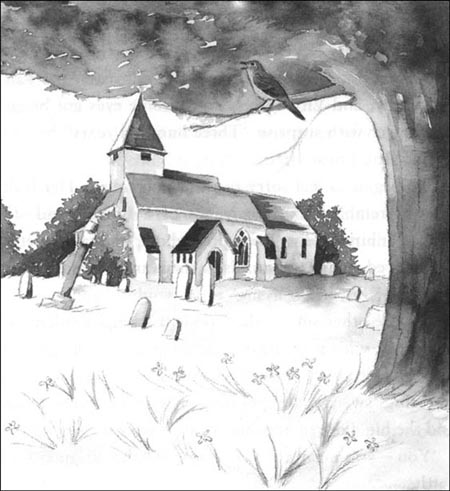
“你——你是说‘死亡花园’。”弗吉尼娅轻轻地说。
“对，死亡。死亡是那么美。静静地躺在地下，上面的草儿随风摇曳，一切归于沉寂……没有昨天，也没有明天；遗忘了时间，拥有了宁静，永远地静止下去。”幽灵看着她，“你能为我打开死亡的大门，因为你一直拥有爱，爱比死亡更强大。”
弗吉尼娅一下子觉得全身冰冷，开始颤抖起来。
接着幽灵又说话了，他的声音像吹过树丛的轻风。“你看过书房窗户上那些过去留下来的话吗？”他问道。
“是的，经常看到。”小姑娘叫了出来，“我熟悉得很。那是用奇怪的黑花体字写成的，很难辨认。只有四行：
当金子般的姑娘为你祈祷，
当有个孩子为你哭泣，
宅邸终将归于沉寂，
宁静降临坎特维尔。
可我不懂那是什么意思。”
“它是这个意思，”幽灵说，“你能为我祈祷，因为我是坏蛋，不能祈祷。你可以为我哭，为我做的那么多坏事哭，因为我不能哭。如果你心地善良又温柔仁慈，死亡会对我网开一面。可怕的怪物会在黑暗中恐吓你，你会听到可怕的声音，但是他们伤害不了你。他们战胜不了一个孩子的善良。”
弗吉尼娅没有回答，幽灵郁闷地看着她。突然，她站了起来，脸色苍白，眼中闪着一种奇异的光芒。“我不害怕。”她说，“我为你祈祷，让你去死，让你拥有平静。”
幽灵开心地轻声叫起来，起身抓住她的手，吻了一吻。他的手指冷得像雪一样，而嘴唇却灼热如火。弗吉尼娅跟着他穿过黑暗的房间。突然，墙面打开了，她身前出现了一个巨大的黑洞。一股冷风从黑暗处刮了出来，她感到仿佛有东西在拽着她的裙子。
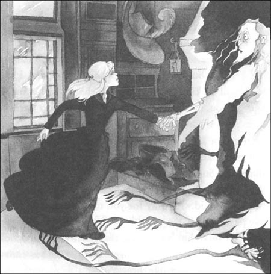
“快来，快啊！”幽灵叫道，“要不然就太迟了。”
刹那间，墙壁在他们身后合上了，屋子里又变得空荡荡的。
6．A skeleton finds rest at last
6
A SKELETON FINDS REST AT LAST
Ten minutes later, it was time for tea, but Virginia did not come down for it. At first, Mrs Otis did not worry. She knew that Virginia liked to go out into the garden every evening to get flowers for the dinner-table. But at six o'clock she sent the boys out to look for their sister, while she and Mr Otis looked in every room of the house.
At half-past six the boys came back. They could not find Virginia. Then Mr Otis, Washington, and the Duke of Cheshire got their horses and rode out into the woods and fields around Canterville Chase. They looked everywhere, and asked everybody, 'Have you seen Virginia?' But nobody could help them.
Just before midnight, they went back to the house. They were very worried, but Mr Otis told everybody to get some sleep. 'We'll begin again in the morning,' he said, 'and I'll send for some detectives from London.'
They were all standing at the bottom of the stairs when the clock sounded midnight. Suddenly there was a crash, followed by a loud and terrible cry. Thunder shook the house, and the sound of ghostly music came to their ears. Then a secret door opened in the wall at the top of the stairs — and out walked Virginia! She was very white, and she had a little box in her hands.
Everyone ran up the stairs. Mrs Otis threw her arms round her, the Duke of Cheshire kissed her again and again, and the twins laughed and danced around her.
'Where have you been?' said Mr Otis. 'We've looked everywhere for you, and your mother has been so frightened for you. You must never play these tricks again.'
'Only on the ghost!' shouted the twins, laughing.
'You must never leave my side again, my dearest Virginia,' said Mrs Otis, and she kissed the trembling child.
'Father,' said Virginia, 'I have been with the ghost. He is dead, and you must come and see him. He was a bad man, but he was really sorry for everything that he did. And look, he gave me this box of beautiful jewels before he died.'
All the family looked at her and the box, and they were too surprised to say a word. Virginia then took them through the secret door in the wall, and down a narrow passage, lit by a candle that Washington was carrying. At last they came to a heavy wooden door. When Virginia touched it, it opened slowly.
They found themselves in a little room with one small window in it. A skeleton lay on the floor, chained to the wall. A plate and a water jug were also on the floor, but they were too far away for the skeleton's fingers to get hold of them.
Virginia put her hands together and began to pray silently. The others looked down at the skeleton of Sir Simon de Canterville. Now they knew the terrible secret of his death.
'He is peaceful now,' said Virginia. 'I prayed to God to give him peace.'
And suddenly the others were sure that they could see a beautiful light around Virginia's face.
'You are wonderful!' cried the young Duke, and he put his arm round her neck, and kissed her.
* * *
Four days later, at about eleven o'clock at night, they took Sir Simon de Canterville to the 'Garden of Death', where he wanted to be. Lord Canterville came specially from Wales to be there with the Otis family.
They put Sir Simon into the ground, and Virginia put a cross made of beautiful white flowers on the ground next to him. When she did this, the moon came out from behind a cloud, and the little night bird began to sing its sweet, high song.
Virginia was very quiet during the drive home.
The next morning, before Lord Canterville left, Mr Otis spoke to him about the box of jewels.
'My lord,' he said, 'these jewels belong to you, or to your family. Virginia asks for only one thing — the box. Can she keep it?'
'My dear sir,' replied Lord Canterville, 'your daughter has been a wonderful friend to one of my family. We shall always thank her for that. And remember, you bought the house and everything in it — the ghost, too! Anything that belonged to him is now yours. No, Mr Otis, your daughter must keep the jewels. When she is a woman, she will be happy to have pretty things to wear.'
So Virginia kept the jewels. And she wore them in the spring of 1890, when she married the young Duke of Cheshire; and everyone said, 'How beautiful!'
Some time later, she and her husband went down to Canterville Chase. One afternoon, they walked through the woods to the Garden of Death, and to the old tree.
'Virginia,' said the Duke. 'Tell me something. What happened when you were locked up with the ghost?'
'Please don't ask me, Cecil, I cannot tell you,' she said. 'Poor Sir Simon! I have much to thank him for. Yes, don't laugh, Cecil, I do. He helped me to understand about Life and Death, and that Love is stronger than both.'
The Duke kissed his wife lovingly. 'My dear, you can keep your secret. The only thing I want is your love,' he said.
'You have always had that, Cecil,' she said.
'And you will tell our children some day?'
Virginia did not answer, but her face went prettily red.
detective n. a person, esp. a member of a police force, employed to investigate crimes 侦探
jewel n. a decoration that contains one or more of diamonds and is worn on clothes or on the body 宝石饰物；首饰
touch v. bring the hand etc. into contact with 触摸；碰到
cross n. an upright post with a bar crossing it near the top; this shape as the sign of the Christian faith. 十字架
belong to to be the property of 属于
终得安息
6．终得安息
十分钟后，到了吃茶点的时间，可弗吉尼娅并没有下楼来。一开始奥蒂斯夫人并不担心。她知道，弗吉尼娅喜欢每天傍晚到花园里去采些花装饰餐桌。可在6点钟的时候，她把男孩子们全都派出去找女儿，自己和奥蒂斯先生则搜遍了每一个房间。
6点半，男孩子们都回来了，他们找不到弗吉尼娅。接着奥蒂斯先生、华盛顿和柴郡公爵骑马找遍了树林和坎特维尔古堡的所有领地。他们四处寻找，逢人便问：“你见到弗吉尼娅了吗？”但没有人能帮上忙。
快到午夜时，他们回到家，都担心极了。奥蒂斯先生叫大家都去睡觉。“我们明天一早再找。”他说，“我再去伦敦叫几个侦探来。”
他们当时都站在楼梯下面，这时午夜的钟声敲响了。突然间“咔嚓”一声，紧接着传来一声可怕的大叫。雷声震动了整个宅子，他们听到一种鬼气森森的音乐。这时，楼梯顶上一道暗门打开了——弗吉尼娅走了出来！她脸色惨白，手里还捧着一个小盒子。
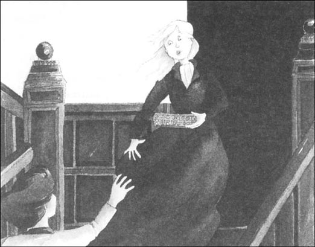
大家都跑上楼梯。奥蒂斯夫人张开双臂抱住她，柴郡公爵一遍又一遍地吻着她，双胞胎兄弟围着她又笑又跳。
“你去哪儿了？”奥蒂斯先生问，“我们到处找你，你妈妈为你担心得不行。你可不能再这么耍我们了。”
“只能耍幽灵！”双胞胎笑着叫道。
“你再也不能离开我身边了，我最亲爱的弗吉尼娅。”奥蒂斯夫人说。她亲吻着颤抖的女儿。
“爸爸，”弗吉尼娅说，“我一直和幽灵在一起。他死了，你一定得来看看他。他是个坏蛋，但他为所做的一切感到后悔。瞧，他死前还给了我这个装满珠宝的盒子。”
全家人看着她和珠宝盒子，惊讶地说不出话来。弗吉尼娅带他们穿过那道墙的暗门，走过一段窄窄的通道。华盛顿用蜡烛照着亮。最后他们来到一扇厚重的木门前。弗吉尼娅一碰它，门就缓缓地打开了。
他们发现自己身处一个小房间里，只有一扇小窗。一具骷髅倒在地板上，被铁链拴在墙上。地上还有一个盘子和一壶水，但是搁得太远了，骷髅的手指尖根本就够不到。
弗吉尼娅合起双手，默默地祈祷起来。其他人都低头看着这具骸骨——西蒙·德·坎特维尔爵士。现在他们都知道他死亡的可怕秘密了。
“现在他安息了，”弗吉尼娅说，“我向上帝祷告令他安息。”
突然之间，其他每个人都确定自己看到有一道圣洁的光芒环绕着弗吉尼娅的脸庞。
“你真棒啊！”年轻的公爵叫道。他用手臂搂住她的脖子，亲吻着她。
* * *
4天之后，大约晚上11点的时候，他们将西蒙·德·坎特维尔爵士的遗体带到了“死亡花园”，这里是他希望安息的地方。坎特维尔勋爵特意从威尔士赶来，加入奥蒂斯一家。
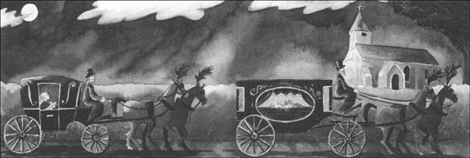
他们把西蒙爵士放入土中，在他旁边的地上，弗吉尼娅放了一个由白色鲜花做成的十字架。正在这时，月亮从云朵背后露出脸来，小夜莺开始轻快地高声歌唱。
在回家的路上，弗吉尼娅非常安静。
第二天上午，在坎特维尔勋爵离去之前，奥蒂斯先生跟他说了那一盒珠宝的事。
“勋爵，”他说，“这些珠宝属于您或您的家族。弗吉尼娅只要一件东西——这个盒子。能给她吗？”
“亲爱的先生，”坎特维尔勋爵答道，“您女儿是我们家族中一位成员的好朋友。为此我们会永远感激她。请记住，您买下了这座房子和这里的一切——还包括幽灵！曾经属于他的任何东西现在都是您的了。不，奥蒂斯先生，您女儿务必要留下这些珠宝。当她长大以后，有这些漂亮的东西打扮，她会很高兴的。”
于是弗吉尼娅留下了珠宝。1890年的春天，在她嫁给年轻的柴郡公爵时，她戴上了它们；而且每个人都赞叹道：“多漂亮啊！”
过了一阵子，夫妇两人回到坎特维尔古堡。一天下午，他们穿过树林，来到“死亡花园”，来到那棵老树下。
“弗吉尼娅，”公爵问，“告诉我，在你和幽灵在一起的时候，发生了什么事？”
“请别问我，塞西尔，我不能告诉你。”她说，“可怜的西蒙爵士！我真要好好感谢他。对，别笑，塞西尔，我是要感谢。他让我懂得了生与死，还有，爱比这两者都要强大。”
公爵充满爱意地吻了一下他的妻子。“亲爱的，你可以保守这秘密。我唯一要的就是你的爱。”他说。
“你一直拥有它，塞西尔。”她说。
“有一天你会讲给孩子们听吗？”
弗吉尼娅没有回答，可她的脸变得红彤彤的。
ACTIVITIES: Before Reading
ACTIVITIES
Before Reading
1．Read the introduction of the book. How much do you know now about the story? Tick one box for each sentence.
1) Canterville Chase is more than 300 years old.
YES □／NO □
2) Lord Canterville's family believes in ghosts.
YES □／NO □
3) The Otis family believes in ghosts.
YES □／NO □
4) The ghost plans to be nice to the Otis family.
YES □／NO □
5) The Otis twins know a lot of tricks.
YES □／NO □
6) Lord Canterville pays Mr Otis to take the ghost away from Canterville Chase.
YES □／NO □
2．What is going to happen in the story? Can you guess? Tick one box for each sentence.
1) The Otis family try to help the ghost.
YES □／NO □
2) The Otis family take the ghost to America.
YES □／NO □
3) The ghost leaves Canterville Chase because he can't frighten anyone.
YES □／NO □
4) One of the Otis children helps the ghost to rest at last.
YES □／NO □
5) The ghost takes one of the children away from Canterville Chase.
YES □／NO □
ACTIVITIES: While Reading
ACTIVITIES
While Reading
1．Read Chapter 1. Then answer these questions.
What
1) ... did the Duchess of Bolton feel on her shoulders?
2) ... couldn't Mr Otis buy in America?
3) ... did the Duke of Cheshire ask Virginia?
4) ... did Sir Simon de Canterville do in 1575?
5) ... did Washington clean off the library floor?
6) ... did Mrs Umney want Mr and Mrs Otis to do?
2．Before you read Chapter 2, can you guess what happens? Choose answers to these questions.
1) What will the Otis family find next morning?
(a) The ghost has killed Mrs Umney.
(b) The bloodstain is back on the library floor again.
(c) All the books in the library are on the floor.
(d) The ghost has broken the little black stick into pieces.
2) What will Mr Otis do when he meets the ghost?
(a) Tell him to leave.
(b) Sit down and talk to him.
(c) Give him a bottle of oil.
(d) Shoot him.
3．Read Chapters 2 and 3. Then put these sentences into the right order, to make a short paragraph.
1) At midnight he began to walk silently along the passage.
2) Then the ghost read the piece of paper, and understood that it was a trick.
3) He was very frightened, and ran back to his room.
4) On August 17th the ghost put on a shroud and a hat.
5) But when he touched the other ghost, its head fell off.
6) He felt very angry, but he couldn't think of a plan.
7) Early next morning he went to see the other ghost again, hoping to be its friend.
8) Suddenly he saw in front of him a horrible ghost, with eyes as red as fire.
4．Read Chapter 4. Then match these halves of sentences.
1) The ghost used oil on his chains...
2) One night the twins put butter on the top stair, ...
3) When the ghost went into the twins' room, ...
4) The ghost went down just to look at the bloodstain, ...
5) The ghost planned to do the Horseman of Death,...
6) a jug of water fell down on him and he got very wet.
7) because he didn't want anyone to hear him.
8) but in the end he was too frightened to leave his room.
9) which made the ghost fall down the stairs to the bottom.
10) but the twins and Washington were waiting for him.
5．Read Chapter 5. Choose the best question-word for these questions, and then answer them.
What/Where/Who/Why
1) ... did Virginia go up the back stairs?
2) ... was the ghost doing when Virginia saw him?
3) ... locked Sir Simon in a room without food or water?
4) ... was Virginia so angry about the bloodstain?
5) ... didn't want to go to America?
6) ... couldn't the ghost do?
7) ... did the ghost want to go?
8) ... two things could Virginia do for the ghost?
9) ... did the ghost go with Virginia?
6．Before you read Chapter 6, can you guess how the story ends? Choose as many of these ideas as you like.
1) Nobody ever sees Virginia again.
2) Nobody ever sees the ghost again.
3) Virginia comes back, but her hair is white.
4) The ghost is still in the house, but only Virginia can see him.
5) The ghost gives Virginia a box of beautiful jewels.
6) Virginia shows her family the skeleton of Sir Simon.
7) The Otis family go back to America with the ghost.
8) The Otis family take Sir Simon to the 'Garden of Death'.
9) Virginia marries the Duke of Cheshire.
ACTIVITIES: After Reading
ACTIVITIES
After Reading
1．Perhaps this is what the ghost was thinking when all those terrible things happened to him. Find the right word to complete each passage, and then describe what is happening in the story at this moment.
1) 'Oh! Ouch! ! Ow! I hurt everywhere. There was ______ on that top stair — I'm sure of it. Oh, those boys are going to be sorry that they did this — very, very sorry.'
2) 'Where is it? It's gone — somebody's cleaned it! I'll have to make it again, but what with? Ah, what's this? I can use some of this red ______, with a bit of purple in it.'
3) 'I just don't understand these people. Lord Raker's hair turned white when he heard my famous laugh, but this woman just tries to give me ______ for my stomach!'
4) 'Who does this man think I am! It's my job to make a noise with these chains — and he tells me to put ______ on them! Oh, I haven't been so angry in years.'
5) 'It's another trick! Oh, I hate them all! I had an awful night, worrying about that horrible thing, and it was just a brush under a sheet, with a ______ for a head!'
2．Find these words in the word search below, and draw lines through them. The words go from left to right, and from top to bottom.
disappear, faint, false, feather, fireplace, frighten, ghost, horrible, jewels, jug, kiss, medicine, passage, pray, skeleton, trick
Now write down all the letters that do not have lines through them, beginning with the first line and going across each Jine to the end. You will have 33 letters, which will make a sentence of 8 words.
1) What is the sentence?
2) Who said it, and to whom?
3) Who did something to change this, and what did they do?
3．Here is a new illustration for the story. Find the best place in the story to put the picture, and answer these questions.
The picture goes in Chapter ______.
1) Which room of the house is this?
2) What is going to happen in a moment?
3) How will the ghost feel after that?
Now write a caption for the illustration.

Caption: __________________________.
4．Put these sentences in the right order to tell the story of Sir Simon de Canterville.
1) When the Otis family arrived, the ghost had a difficult time.
2) His wife's brothers locked him in a room without food or water, and he died there.
3) Then Virginia met the ghost, and prayed for him to die.
4) For 300 years he was the best ghost in the country.
5) Sir Simon murdered his wife in the library in 1575.
6) After that, Sir Simon's ghost never appeared again.
7) After that, his ghost began to appear in Canterville Chase.
8) The family found Sir Simon's skeleton, and put it in the ground in the 'Garden of Death'.
9) Then, in 1584, he suddenly disappeared.
5．These are some of the ways that Sir Simon liked to appear. Which is the most frightening and which is the least frightening, do you think? Put them in order.
·as a big black dog
· as a skeleton
·wearing heavy chains
· with no head
·in a shroud, smelling of death
What is the most frightening kind of ghost that you can think of? Complete this sentence.
I think the most frightening ghost in one that ______.
封底